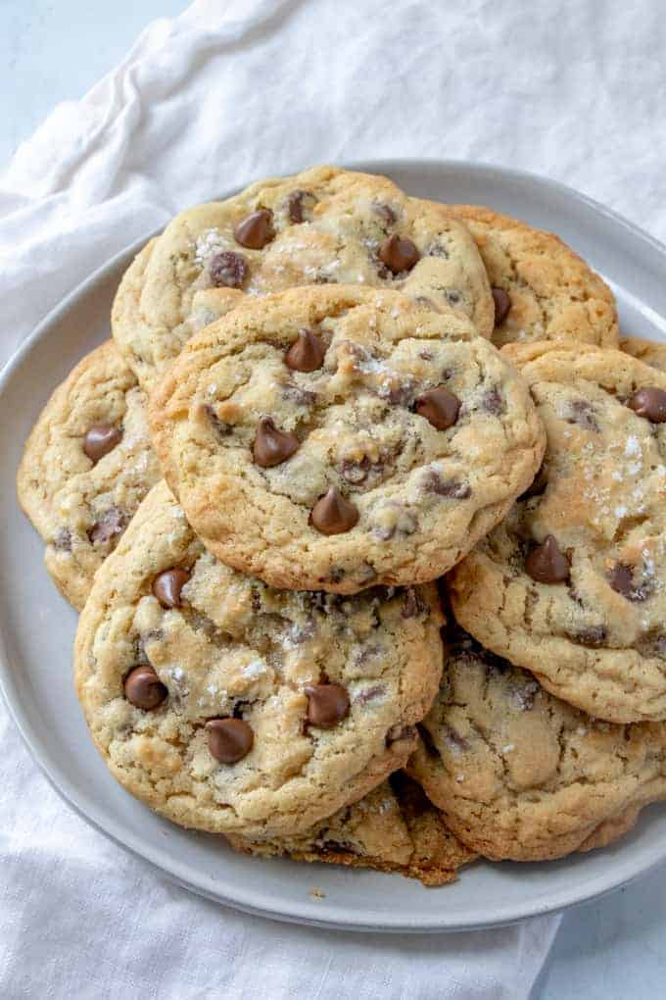

Double Chocolate Cookies
Origin: Michigan Source: Family Recipe Category: Dessert
My daughter learned to make these cookies at a baking camp at Zingermanns and has tweaked the recipe to fit the taste buds of her siblings. They are extremely sugary so the salt helps to balance it. Note, these cookies are best eaten very quickly.
Recipe Ingredients
- Unsalted butter
- Granulated Sugar
- Packed light or dark brown sugar
- Large egg
- Pure vanilla extract
- Semi-sweet chocolate chunks (melted)
- All-purpose flour
- Natural unsweetened cocoa powder
- Baking soda
- Salt
- Semi-sweet chocolate chunks
Recipe Steps
- In a mixing bowl cream together the butter, granulated sugar, and brown sugar
- Add the egg and vanilla extract and beat well
- Add the melted chocolate
- In a separate bowl combine the flour, baking soda, cocoa powder and salt
- Combine the wet and dry ingredients
- Add the unmelted chocolate chunks.
- Form 15 cookies and place on a baking sheet.
- Cook for 12 to 13 minutes at 350 degrees.
Additional Food images


Swedish Pancakes
Origin: Sweden Source: Kristi at True North Kitchen Category: Breakfast
Swedish pancakes (Pannkaka [singular] or Pannkakor [plural] in Swedish) are one of the most well-known Scandinavian delicacies, and rightfully so. Tender, buttery and often served with butter and lingonberry jam, there is much to account for their popularity.
Recipe Ingredients
- Butter
- Eggs
- Sugar
- Vanilla
- Milk
- Water
- Salt
- Flour
Recipe Steps
- Combine all ingredients in a blender and blend until completely smooth.Transfer to the refrigerator to rest for at least 2 hours or up to 2 days.
- Preheat oven to 200 degrees if you plan to eat the pannkakor right away. Heat a 10 inch nonstick skillet over medium heat. Stir the batter briefly to recombine. Brush skillet with melted butter. Pick the skillet up off of the burner and quickly add ¼ cup of batter. Immediately begin swirling the batter around the skillet so that it coats the bottom of the pan. Continue swirling until the batter is just set. Return skillet to the burner. Cook until the pancake is golden brown in spots on the bottom, about 30 seconds. Use a thin spatula to loosen the pancake, flip it over continue to cook on the other side for about 30 seconds. Transfer to a plate. Cover with foil and transfer to oven to keep warm and repeat with remaining batter, wiping out skillet in between pancakes with paper towel as needed.
- Serve with lingonberry jam and butter (see note below) or other desired toppings and/or fillings. See notes below for more information about making ahead of time and storing in the refrigerator or freezer.
Additional Food Image

Coca-Cola Chicken Wings
Origin: China Source: Family Recipe Category: Main Dish
I learnt how to cook Coca-Cola chicken wings from my mother, and I've since tweaked her recipe to better suit my family's palate, making it less sweet. While the cooking process remains straightforward, the result is incredibly flavorful, and once you've tried it, you'll understand its delicious appeal!
Recipe Ingredients
- Chicken wings
- Scallions
- Ginger slices
- Cooking wine
- Dark soy sauce
- A can of coke
Recipe Steps
- Wash and place chicken wings in a bowl
- Add scallions, ginger slices, cooking wine, dark soy sauce and salt to the washed chicken wings, and mix them well
- Cover the bowl with plastic wrap and marinate the chicken wings for 1 hour
- Put the right amount of oil in the pot, and put the marinated chicken wings into the pot and fry it until golden brown on both sides
- After fry the chicken wings until golden brown on both sides, then pour a can of coke into the pan and bring to a boil
- Continue to cook for an additional 2-3 minutes until the glaze has thickened and coats the wings nicely
- Transfer the Coca-Cola glazed chicken wings to a serving platter
Additional Food Images


Chinese Hot and Sour Soup
Origin: China Source: Family Recipe Category: Soup
a popular and flavorful soup known for its spicy and tangy taste. It's made with a variety of ingredients including tofu, mushrooms, and bamboo shoots.
Recipe Ingredients
- Tofu
- Mushrooms
- Water
- Pork
- Bamboo Shoots
- Soy Sauce
Recipe Steps
- Boil the water.
- Add the ingredients to the boiling water.
- Allow the water to simmer down.
- Add the cornstarch and water mixture to the soup.
- Stir the soup.
- Allow the soup to simmer for 5 minutes.
Additional Food Images


Zucchini Fritters
Origin: Turkey Source: Nifty Recipe Category: Side dish/main dish
It uses minimal ingredients and can be done in less than half an hour. They’re delicious and filling and go great with dipping sauces. You can serve them as a side dish or as a main dish with a salad on the side. They are also great for breakfast or brunch.
Recipe Ingredients
- Zucchini
- Egg
- Flour
- Vegetable/Seed Oil
- Garlic
- Salt and Pepper
Recipe Steps
- Combine eggs, salt, and pepper and whisk
- Add pressed garlic
- Grate the zucchini and squeeze the moisture out of it
- Add zucchini and flour and mix.
- Heat oil in pan and add dollops of batter
- Serve with or without dipping sauce
Additional Food Images